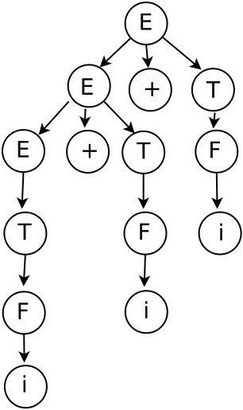
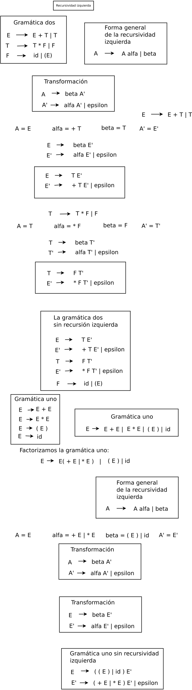

Recursión izquierda
Definición de recursión izquierda. Para determinar la recursión izquierda, se usa el reconocimiento de tokens de izquierda a derecha. Consideremos la siguiente gramática G4 :
E → E + T |T,
T → T ∗ F |F,
F → id|(E)
Y para esto se analiza la expresión id + id + id. Por lo que se aplican las siguientes derivaciones:
E ⇒ E + T ⇒ E + T + T ⇒ T + T + T ⇒ F + T + T ⇒ id + T + T ⇒ id + F + T ⇒ id + id + T ⇒ id + id + F ⇒ id + id + id
de las derivaciones obtenidas se construye el árbol de análisis sintáctico. Que es el siguiente:

Si se puede obtener un árbol de análisis sintáctico diferente, entonces la gramática sería ambigüa. Haciendo la siguiente derivación:
E ⇒ E + T ⇒ E + F ⇒ E + id ⇒ E + T + id ⇒ E + F + id ⇒ E + id + id ⇒ T + id + id ⇒ F + id + id ⇒ id + id + id
Sucede que no podemos saber donde detener la aplicación de la producción E → E + T.
E ⇒ E + T ⇒ E + T + T ⇒ E + T + T + T ⇒ ...
Debido a que la producción E → E + T, tiene la forma A → A α.
Una producción cuando tiene la siguiente forma:
A → A α
Se dice que tiene recursividad izquierda. Remarcando:
E → E + T
A → A α
Se puede ver que tienen la misma forma, haciendo las siguientes igualdades:
E = A
+ T = α
Engineering a compiler, Keith D. Cooper and Linda Torczon, Pág. 1-3
Elininación de la recursión izquierda
Para eliminar la recursividad izquierda. Se aplica la siguiente transformación:
A → β A'
A' → α A' | ε
Cuando se encuentran producciones de la siguiente forma:
A → A α | β
Engineering a compiler, Keith D. Cooper and Linda Torczon, Pág. 3
Introduction to Compiler Design, Torben AEgidius Mogensen, Pág. 97

Ejemplo. Eliminación de la recursividad izquierda a la gramática 4:
Se plantea la siguiente línea de código:
return (a + b) * c ;
Se construye la gramática libre de contexto (GLC).
S → return E ; ,
E → E + T | T ,
T → T ∗ F | F ,
F → id | (E)
Las derivaciones para esta línea de código, es:
S ⇒ return E ; ⇒ T ⇒ return T * F ; ⇒ return F * F ; ⇒ return ( E ) * F ; ⇒ return ( E + T ) * F ; ⇒ return ( T + T ) * F ; ⇒ return ( F + T ) * F ; ⇒ return ( id + T ) * F ; ⇒ return ( id + F ) * F ; ⇒ return ( id + id ) * F ; ⇒
return ( id + id ) * id ;
Se hace la comparación de la gramática 4 con la forma general de la recursividad izquierda, de la siguiente forma:
E → E + T |T,
T → T ∗ F |F,
F → id|(E)
Se aplica la forma general de la recursividad izquierda:
A → A α | β
Cuando se encuentra una producción con recursividad izquierda, se aplica la siguiente transformación:
A → β A'
A' → α A' | ε
Las producciones que tienen recursividad izquierda son las siguientes:
E → E + T |T
T → T ∗ F |F
Se aplican las transformaciones de la siguiente forma:
Para la producción:
E → E + T | T
A → A α | β
A = E
A' = E'
α = + T
β = T
Para la producción:
T → T ∗ F | F
A → A α | β
A = T
A' = T'
α = * F
β = F
Las producciones con la recursividad izquierda ya corregida, quedan de la siguiente forma al hacer la substitución en la transformación que se escribe en rojo:
A → β A'
A' → α A' | ε
E → T E'
E' → +T E' | ε
Y lo otra producción queda como sigue:
T → F T'
T' → *F T' | ε
La gramática corregida queda de la siguiente forma:
S → return E ;
E → T E'
E' → +T E' | ε
T → F T'
T' → *F T' | ε
F → id | (E)
Otro ejemplo. Eliminación de la recursividad izquierda a la siguiente gramática:
Se plantea las dos líneas de código siguientes:
int x1;
int x1 , x2 , x3 , x4 , x5;
Esto se puede expresar por medio de la siguiente gramática:
S → int LV ;,
LV → LV , V | V,
V → x1 | x2 | x3 | x4 | x5
La producción que tiene la recursividad izquierda, es:
A → A α | β
LV → LV , V | V
Se aplican las transformaciones de la siguiente forma:
A → β A'
A' → α A' | ε
Se hacen las siguientes igualdades:
A = LV
A' = LV'
α = , V
β = V
Se hacen las substituciones:
LV → V LV'
LV' → , V LV' | ε
Así que la grmática se escribe de la siguiente forma: